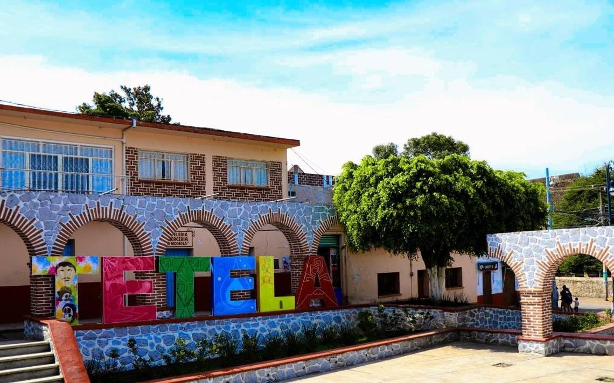

Quizá debas programar tus vacaciones entre finales de agosto y mediados de septiembre para que, puedas, disfrutar de las fiestas de El Tepozteco, en el acogedor Pueblo Mágico morelense de Tepoztlán. Estas fiestas con las más puras raíces nativas, viven su momento culminante con la subida al cerro de El Tepozteco, hasta llegar al conjunto adoratorio del dios Ometochtli Tepuztécatl, en medio de las manifestaciones artísticas indígenas y la alegría de los asistentes.Para los amantes de la belleza arquitectónica, en Tepoztlán hay que admirar el Exconvento de la Natividad y el templo de Nuestra Señora de la Natividad. El Barrio de San Miguel es el más popular de la localidad, cuyo símbolo artístico y cultural es la lagartija. En Tepoztlán puedes disfrutar de un temazcal con todo el ambiente y el ritual de los tiempos precolombinos, así como degustar los helados más deliciosos de Morelos.
Oaxtepec es un poblado perteneciente al municipio de morelense de Yautepec.Se distingue por por sus servicios turísticos y la agricultura.
Las razones por las que debes visitor Oaxtepec son:
La simpática Teques es una población del municipio morelense de Jojutla, en el sector suroccidental del estado, que se distingue por su lago, que es uno de los santuarios para los deportes acuáticos en México. Su clima cálido sin bruscas variaciones de temperatura lo ha convertido en un destino de todo el año para los amantes del esquí acuático, el wakesurf y el buceo. De igual manera, la gran cantidad de jóvenes que va a Teques ha potenciado el desarrollo de otros novedosos entretenimientos, como el paracaidismo de puentes, el sky dive, el flyboard y el rafting por el Río Amacuzac.
La capital de Morelos alberga edificaciones de notable belleza y relevancia histórica, como la Catedral, el Palacio de Cortés, el Palacio de Gobierno, el Chapitel y el Hotel Casino La Selva. El Palacio de Cortés fue la casa de descanso del célebre conquistador y es una imponente construcción levantada a imagen del Alcázar de Colón, en la isla La Española. El Palacio de Gobierno es un edificio de estilo barroco virreinal y el Chapitel es un conjunto religioso formado por una iglesia y una capilla abierta. El antiguo Hotel Casino La Selva fue demolido, pero se conservaron los magníficos murales pintados por Gerardo Murillo, David Alfaro Siqueiros y Jorge González Camarena.
Podemos encontrar "Papalote Cuernavaca",un museo que encanta a los niños por la forma divertida con la que pueden tener contacto con los temas de la ciencia y el arte.Este museo se encuentra en la Avenida Vicente Guerrero y funciona en un edificio que fue diseñado por el arquitecto Alejandro Bernardi.
Otra museo es el Robert Brady, que se ubica en la que fuera la casa de residencia del artista y coleccionista estadounidense de ese nombre. Tiene una de más de 1.300 piezas entre las que destacan pinturas, imágenes, mobiliario y objetos antiguos de varias culturas, reunidas por Brady en sus frecuentes viajes por el mundo.
El Museo Morelense de Arte Popular reúne las mejores creaciones de los artesanos del estado, la mayoría premiadas en los concursos del sector.
"Este yacimiento arqueológico morelense localizado a 38 km de Cuernavaca fue declarado Patrimonio de la Humanidad en 1999.
Se cree que el surgimiento del asentamiento estuvo vinculado con el abandono de Teotihuacán, viviendo su época de esplendor durante el periodo Epiclásico, entre los siglos VII y X.
Por la calidad de sus relieves esculpidos, debió acoger a varios notables artistas. El principal edificio del conjunto es la Pirámide de la Serpiente Emplumada, que pone de manifiesto en sus fachadas el talento artístico de sus constructores.
Xochicalco también era un observatorio astronómico, conservándose una estructura de casi 9 metros con una boca de tiro hexagonal e inclinada, que se utilizaba para el estudio del movimiento de los rayos solares.
El yacimiento dispone de un museo de sitio, catalogado como el primero del mundo de carácter ecológico, por su construcción y por sus sistemas naturales de iluminación, ventilación y captación del agua de lluvia."
El Parque Nacional Iztaccíhuatl-Popocatépetl, es un bello espacio formado por amplios parajes, zonas boscosas y conos volcánicos, abarcando territorios de los estados de México, Puebla y Morelos,este parque fue una de las primeras áreas protegidas de la república mexicana. Los entusiastas de los paisajes naturales van al parque nacional a respirar aire puro, observar la biodiversidad, acampar, hacer excursiones y practicar ciclismo montañero, entre otros entretenimientos al aire libre.
"Esta ciudad morelense vivió importantes episodios guerreros durante la Independencia y la Revolución Mexicana, lo cual es testimoniado por diferentes monumentos y sitios de interés en la localidad. Entre los anteriores lugares se encuentra el Museo del Oriente de Morelos «Casa de Morelos» que funciona en un inmueble que fue la residencia de José María Morelos durante el Sitio de Cuautla en 1812. En el museo se exhiben objetos históricos y piezas arqueológicas de los periodos Preclásico y Posclásico, algunos de los cuales aparecieron sorpresivamente en la misma edificación, en medio de una restauración realizada en 1992. Otros atractivos de Cuautla de Morelos son el Exconvento de Santo Domingo de Guzmán, la Iglesia de Santiago Apóstol y la antigua estación del ferrocarril."
"El convento de Santiago Apóstol, erigido en el siglo XVI, fue el primero levantado por la orden agustina en toda Nueva España. Otras edificaciones religiosas que vale la pena admirar en el municipio de Ocuituco son los templos de San Marcos Evangelista, San Andrés, San Miguel Arcángel, San Francisco de Asís y La Natividad de Nuestra Señora. Hacia la localidad de Metepec está la Ruta de los Cuexcomates, los típicos y pintorescos sitios de almacenamiento de granos y semillas. La localidad de Jumiltepec atrae a los visitantes con el delicioso aroma de su pan hecho en hornos de leña, mientras que la Presa Vista Hermosa es el lugar para ir de pesca."
Yecapixtla tiene una exquisita cecina. Por lo cual es también conocida como “la capital mundial de la cecina”. Se trata de un pueblo lleno de historia, colores y sabores que regalan una estancia muy agradable a quien decida visitarlo.
Estos son algunos lugares que puedes visitar estando allí:
En Tetela del Volcán,sin duda hay una gran variedad de lugares por visitar como son:
Especificaciones:
Río Amatzinac. Aquí podrás disfrutar de un paisaje maravilloso, con un clima esplendido.
Conventos de San Juan Bautista. Fueron construidos en el siglo XV por el fraile dominico Juan de la Cruz.
Convento de Santo Domingo. Ubicado en Hueyapan.
Iglesias de San Pedro y San Pablo. Ubicadas en Tlamimilulpan.
Segunda Semana de Febrero. Celebración Religios en el Convento de Tetela.
4 de Agosto. Se celebra la fiesta al Santo Patrono de Hueyapan.
El 29 de septiembre se colocan flores en los campos de cultivos y se agradece a la Divina Providencia.
"Sin duda Tetela del Volcán cuenta con una deliciosa gastronomía, con lugares exquisitos que nos ofrecen una gran oferta gastronómica, entre los platillos típicos de la región podremos encontrar el mole verde, cecina enchilada, tlacoyos de haba y de frijol, cecina de res con crema y queso, en cuanto a bebida las tradicionales son el tepache, que es pulque de maguey hervido con chile guajillo, curado de zarzamora, durazno y ciruela."

Lugares turísticos en Morelos |
Lugares turísticos en Morelos |
||
|---|---|---|---|
| Morelos |  |
||
| Morelos | |||
| Morelos |
|
https://tipsparatuviaje.com/lugares-turisticos-de-morelos/
https://lanzateyviaja.com/morelos/lugares-turisticos
https://www.mexicodestinos.com/blog/10-motivos-para-conocer-oaxtepec/
https://skydivemexico.mx/blog/actividades-tequesquitengo/
https://www.morelosturistico.com/espanol/pagina/z_979_Tetela_del_Volcan.php
https://www.eluniversal.com.mx/destinos/que-hacer-en-yecapixtla-morelos